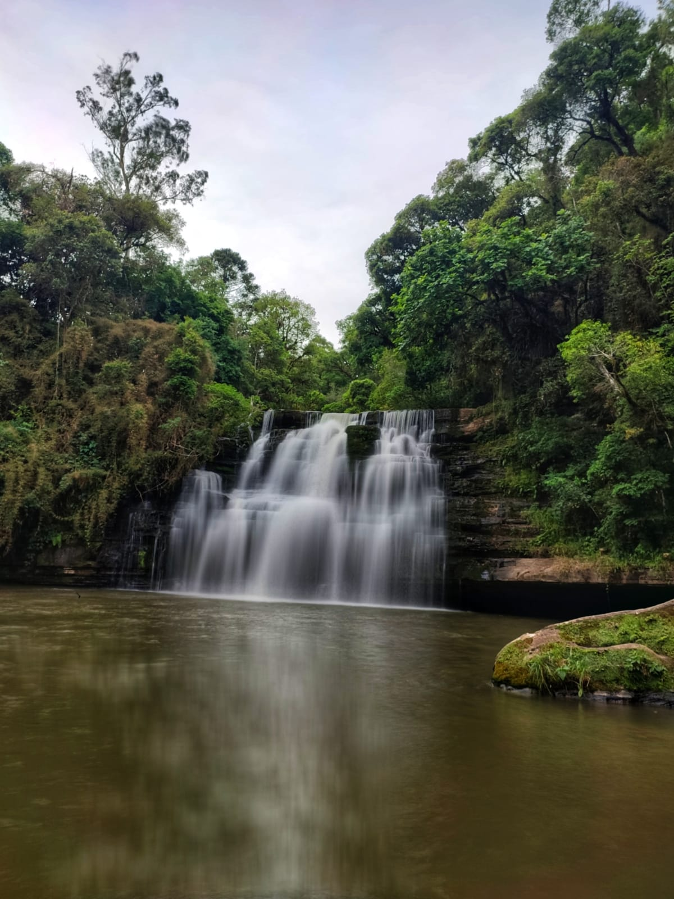

Pontos Turisticos:
|Hino
|Vídeos
|Pontos Turisticos
Home
Cachoeira Desanoski:
Lugar de paz e relaxamento com esta linda cachoeira
que é permitido se banhar em suas águas.

Cachoeira Pedreira:
Muito conhecido na região , um lugar de aproveitar com Fámilia.